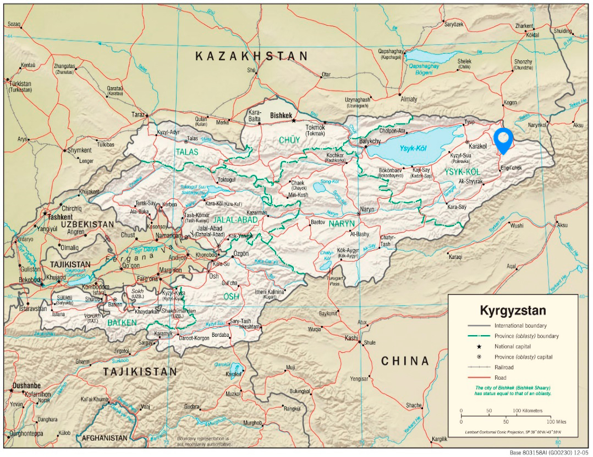
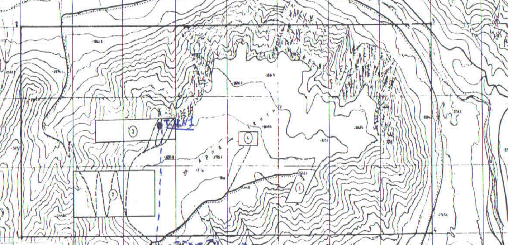

Deposit Location
The deposit sits at 2 800 – 3 500 metres above sea level in the Ak Su district in Issykkkul region in Eastern Kyrgystan. The areas of graphite concentration are located on a plateau with further areas of flatland suitable for process plant construction located in the valley near the river Kuilyu.
The site is served by a metaled road running North to the regional centre of Karakol (156km) and South to the village of Enilchek (26km). The road is accompanied by a high voltage power line; both the road and the power line run within approximately 0,5km of the deposit, providing key infrastructure.
 Kuilyu deposit
 Detailed map of deposit
Deposit Details
The deposit holds two licenses.
- A Production license granting 20 years production rights at Arpu Takyr II. Issued in 2015 all requirements are up to date: see section on our progress in 2017. Arpu Takyr II is a confirmed (C1/C2) deposit of 7.7m tonnes with an initial confirmed reserves of 265 500 tonnes of high grade graphite, and a low strip ratio of 1/1 - 4/1. Recent sample tests are showing higher graphite grades of 8 -18% within the deposit and research suggests that the ore reserves may extend further than the initial state confirmation.
- Exploration license allows 5 years development of the remaining parts of the deposit. Issued in 2016 all requirements are up to date: see section on our progress in 2017. High quality graphite ore at 3 – 5% grade has been sample tested in various parts of this area and the state feasibility study suggested that the overall deposit may contain up to 6.5m tonnes of graphite: the original state feasibility study was formulated on this assumption giving a 50 – 80 year mine life producing approximately 100 000 tonnes of graphite per year.
The area total is 2 400 hectares, with easy access to water and full water rights for the project. Although in a mountainous region, the deposit sits on a plateau, allowing low strip ratio, open pit mining.
Financials
The operation has already been fully costed for capital build and operation using a proprietary model applied only to the confirmed data of Arpu Takyr II.
This has shown a that even on the lowest grade, cash payback is less than 3 years and the NPV over $70m with the payback falling to under one year and the NPV increasing substantially as the grade increases.
The strategy assumed by the management team is the result of over 100 years of mining and project experience between them and aims at a modular, low cost, low risk start; permitting a rapid build to bring the operation into revenue and profit as quickly as possible.
This approach reduces risk and the ability to move quickly to production rewards investors with a production base and revenue that can be expanded as required and at a similarly low risk and low cost.
The management team benefit from wide international mining, project and financial experience and have all spent many years in Kyrgyzstan, understanding the local conditions and contractors. The sum of this experience means that the mine design and plan follows their experience of processes and plans that have already been proven as successful.
The full detailed financial and operational plans are available on application at the discretion of the management team.
Markets
Kuilyu has several marketing advantages:
- Quality: High grade large flake. The state geological reports show large flake graphite present in quantity
- Location: Close to Asian users. The location offers short fast routes and reduced transport costs to the growing number of Asian mega factories manufacturing Li-on batteries.
- Pricing: The low build and operating costs for the processing plant, ensure the pricing will be competitive.
- Stable infrastructure and experienced workforce will maintain deliveries, timing and bring constant improvement to the product and operation
- Increasing demand for high quality graphite driven by the recovering steel demand and the rapid growth of green energy and the further advanced uses of graphite